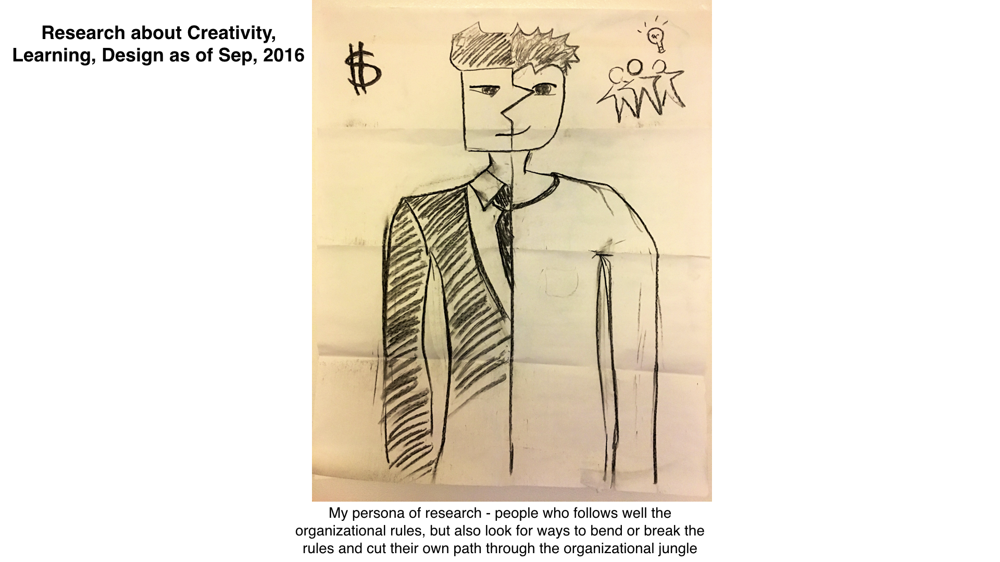
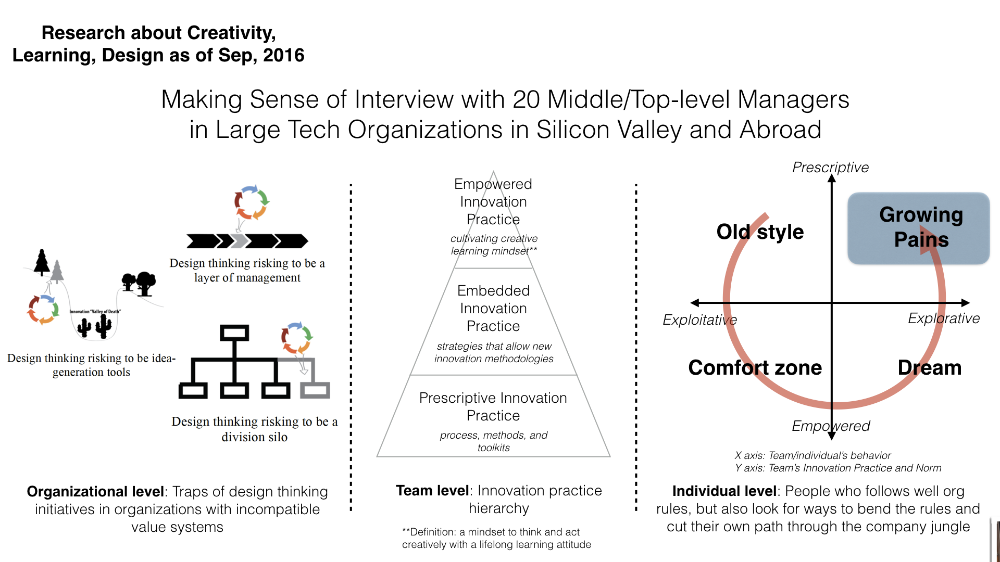
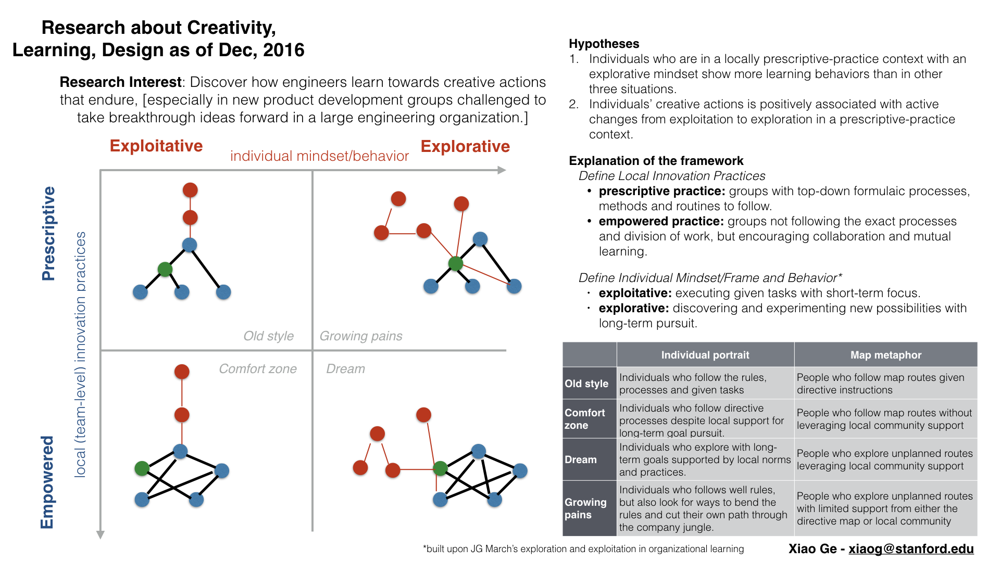
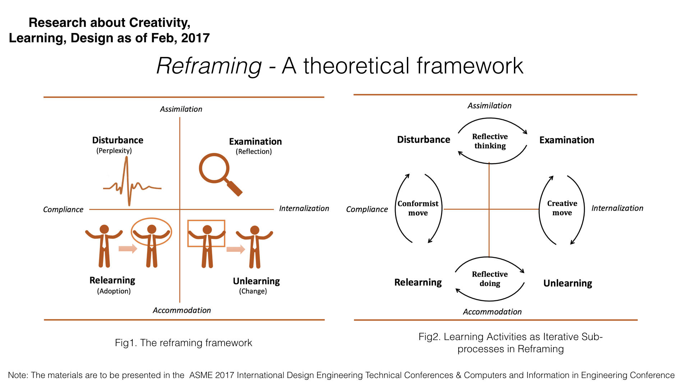
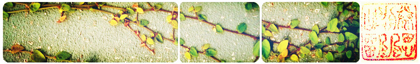

Study how we form new perceptions and develop nonconformist behaviors. The research topic is especially salient in the context of design innovation. I've been interested to build up a theoretical basis about the underlying mechanisms. This is supposed to be a lifelong inquiry, and now is part of my PhD journey.    

Researched on the thermal performance of open refrigerated display cabinet, using Computational Fluid Dynamics model simulation; paper published